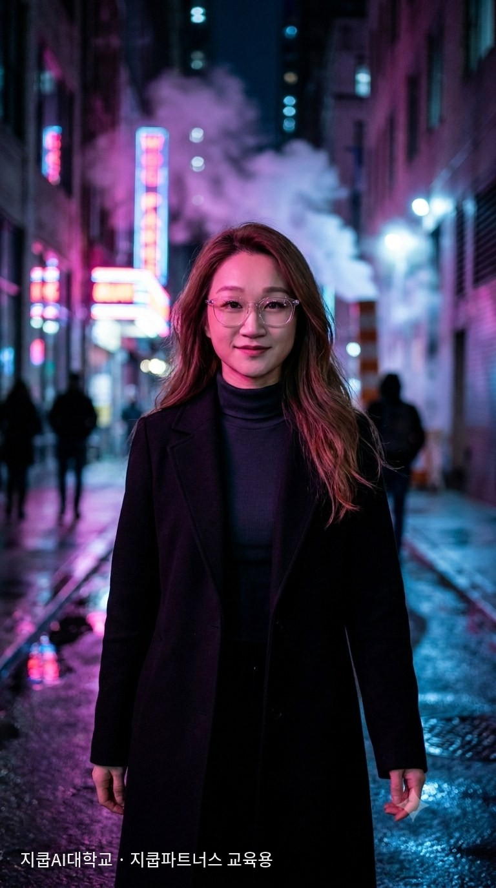

오늘의 프롬프트AI로사쌤 · 22번
지쿱AI대학교 · 지쿱파트너스 교육용 프롬프트
네온 골목의 영화 주인공, 사진에서 영상까지
먼저 사진을 만들고, 그 사진으로 영상을 만드는 두 단계예요. 남녀 누구나 쓸 수 있어요.
1단계사진 만들기

제미나이나 챗GPT에 본인 사진을 먼저 올리고, 아래 프롬프트를 붙여넣으세요.
업로드한 사진 속 인물을 주인공으로 한 영화 스틸컷 같은 실사 사진. 얼굴을 그대로 반영하고 이목구비, 얼굴형, 헤어스타일, 안경을 바꾸지 말 것. 여성이면 여성, 남성이면 남성으로 표현. 자신감 있고 은은하게 미소 짓는 얼굴.
옷은 검은색 롱 코트와 짙은 색 터틀넥의 세련된 차림.
장면: 인물이 비가 막 그친 밤의 도심 골목 한가운데에서 카메라를 향해 걸어오는 모습. 양옆으로 분홍, 파랑, 보라색 네온 조명이 빛나고 젖은 바닥에 네온 불빛이 길게 반사됨. 뒤쪽으로 흐릿한 행인들의 실루엣과 김이 오르는 골목 풍경. 네온 간판은 글자 없이 빛과 도형으로만 표현.
구도: 머리 위부터 허리 위까지의 상반신, 얼굴이 화면에 크게 보이게, 낮은 심도로 배경 네온이 둥근 보케로 번짐. 얼굴 한쪽은 분홍빛, 다른 쪽은 푸른빛으로 물들되 얼굴이 어둡지 않게 밝힘. 영화 같은 와이드 렌즈 색감.
고해상도 4K 실사, 피부결과 머리카락, 젖은 바닥 반사까지 선명하게, 자연스러운 손가락, 이미지 안에 글자·간판 글씨·로고·워터마크 없음, 세로 9:16.
2단계영상 만들기
1단계에서 만든 사진을 영상 도구에 첫 장면으로 올리고, 아래 프롬프트를 붙여넣으세요.
첫 프레임 이미지 속 인물의 얼굴, 헤어스타일, 안경, 의상과 배경을 끝까지 그대로 유지.
0~4초: 인물이 카메라를 마주 보며 네온 골목을 천천히 걸어옴. 코트 자락이 걸음에 맞춰 흔들리고 젖은 바닥의 네온 반사가 발걸음마다 일렁임. 살짝 슬로모션.
4~7초: 인물이 걸으면서 한 손으로 코트 깃을 세우고 시선을 옆의 네온 불빛으로 잠깐 돌렸다가 다시 카메라를 바라봄. 네온 빛이 얼굴 위로 분홍에서 파랑으로 스쳐 지나감.
7~10초: 걸음을 멈추고 카메라 앞에 서서 옅게 웃으며 한국어로 낮고 차분하게 말한다: "오늘 밤의 주인공은 저예요."
카메라는 얼굴이 계속 잘 보이도록 인물 앞에서 같은 속도로 뒤로 물러나는 팔로우 샷. 소리는 젖은 길을 걷는 발소리, 멀리 들리는 도시 소음, 낮게 깔리는 신시사이저 음악.
4K 고해상도 실사 영상, 10초 원테이크, 움직임은 자연스럽고 부드럽게, 얼굴과 손 변형 없음, 대사는 입 모양에 맞춰 자연스럽게, 화면에 자막·글자·로고 없음.
지쿱AI대학교 · 지쿱파트너스 교육용 프롬프트
출처 · AI로사쌤 · 무단 복제와 재배포를 금합니다